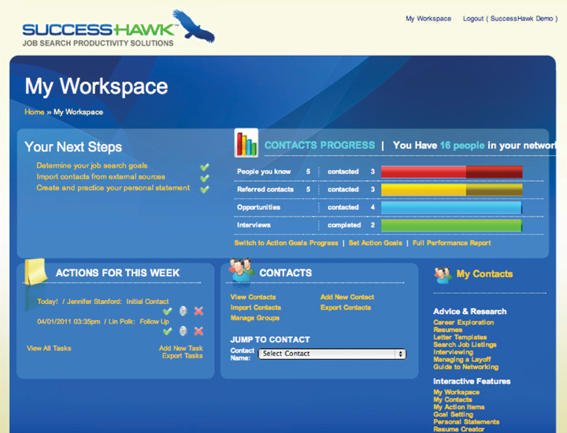

9.7 Chapter Review and Exercises
Stay motivated and organized and troubleshoot your search:
- Keep your energy high and your focus strong.
- Maintain data in a structured and meaningful way.
- Identify and fix problems along the way.
Step 5 is the most proactive of the six steps to job search success because these activities can so easily be overlooked. Yet, for the job seeker who takes the time to master each of these activities, he or she will have a more efficient and productive search.
Chapter Takeaways
- There are two types of motivation, long-term and short-term; each plays a critical role in your job search.
- Long-term job search motivation is akin to a multiweek research project, while short-term motivation is more like weekly class exams.
- There are specific events during your job search when you need to get motivated at will, including job interviews, networking meetings, career fairs, professional mixers, and offer negotiations.
- Creating a deliberate routine and set of actions can enable you to get motivated for these high-stakes events.
- Deliberate work scheduling and taking longer breaks will help you stay motivated for the duration of your search.
- Activities during your longer breaks are not just about refreshment but also about contributing to the enthusiasm you bring to your job search.
- You need two lists of contacts: an overall list and a job search–specific list.
- You need to track all of your contacts because you need one go-to place for your network.
- You need a job search–specific list because there is additional information to track regarding the contacts for your job search.
- For your job search contacts, you want to know the activity, dates, and follow-up actions related to your contacts.
- You need to select a system to get and stay organized.
- There are three main choices for organizational systems: paper-based, electronic customized, and electronic off-the-shelf.
- Each choice of system has its pros and cons.
- You want to select a system that matches the way you naturally work.
- The hiring process includes candidate identification, interviewing, and hiring. At any of these stages, there can be problems for the job seeker.
- You should measure the results of your networking and interviewing on a regular basis to see how you are doing at the identification, interviewing, and hiring stages.
- At the candidate identification stage, you may not be getting enough interviews because of a mismatch between your targeting and positioning, an incomplete marketing campaign, or passive outreach.
- At the interviewing stage, you may not be moving forward because you lack key message points that highlight your value, you give answers without examples, or you are not at your best.
- At the closing stage, you may not be getting offers because you have job search fatigue that appears to be lack of interest, you don’t follow up and employers forget you while they interview others, or you show hesitation about the job or self-doubt.
- You should be troubleshooting your job search at regular intervals by tracking your results data and by being honest with yourself.
Chapter Review
- Why is motivation important to the job search?
- Why is organization important to the job search?
- Why is troubleshooting important to the job search?
- Why is after the network and interview phase has begun a good time to look at motivation, organization, and troubleshooting?
- What are some ways to stay motivated during your job search?
- What are some tools to stay organized during your job search?
- Where are the three stages in a job search where a search may get stuck?
- Why is it a good idea to set a calendar reminder for every thirty days to troubleshoot your job search?
SuccessHawk: The Scheduler
The Scheduler is the key tool for keeping your job search organized and on track. It notifies you of actions you need to take with your contacts to keep your job search moving forward. The Scheduler is activated in two ways:
- Go to a Contact’s page and scroll down to “Actions to Take.” Click on “Actions to Take” and complete the form.
- Go to a Contact’s pages and scroll down to “Reactions and Next Steps,” answer the questions, and click “Set Follow Up.”
Completing this procedure triggers the following:
- SuccessHawk will automatically populate “Actions for this Week” on My Workspace. Note that you can export Actions for this Week to Microsoft Outlook, Apple iCal, and other applications that support calendar (.ics) files.
- SuccessHawk will also e-mail you reminders about who to contact and when. You can choose how often you want to receive e-mail reminders by clicking on “User Preferences” in the right-hand menu bar under My Account.
